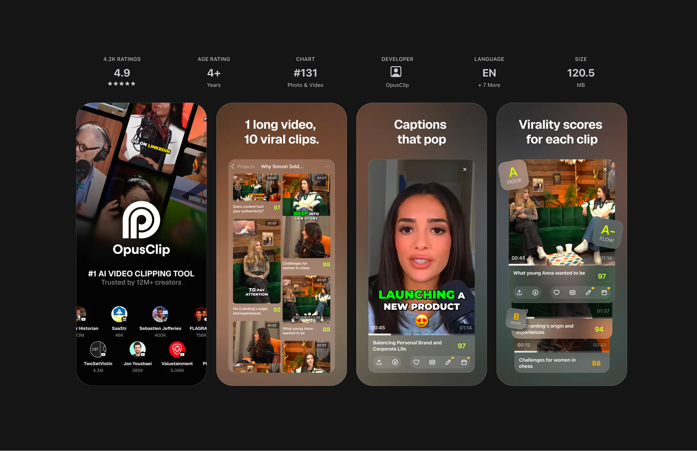
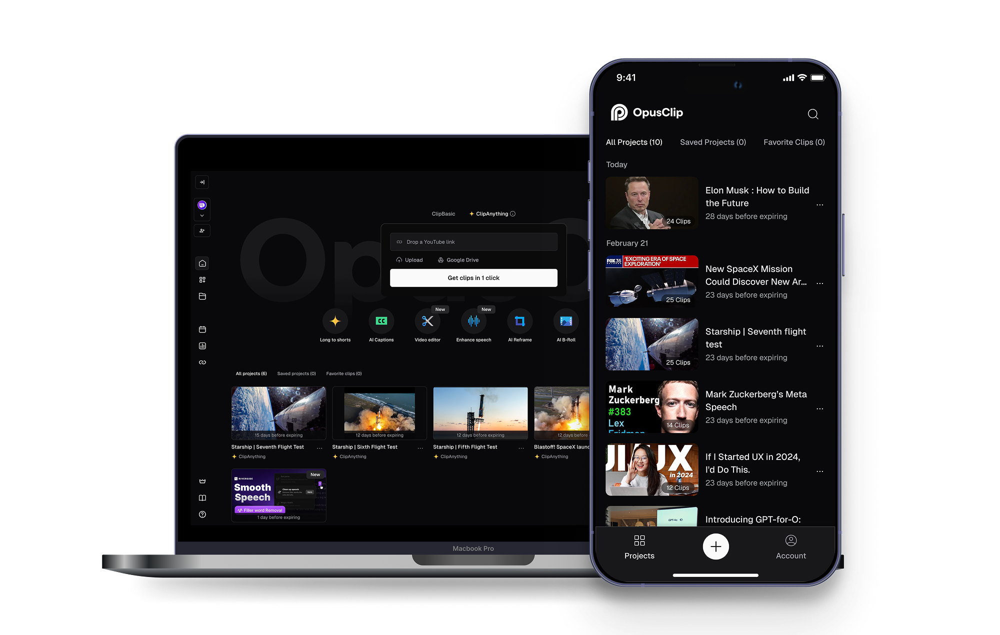
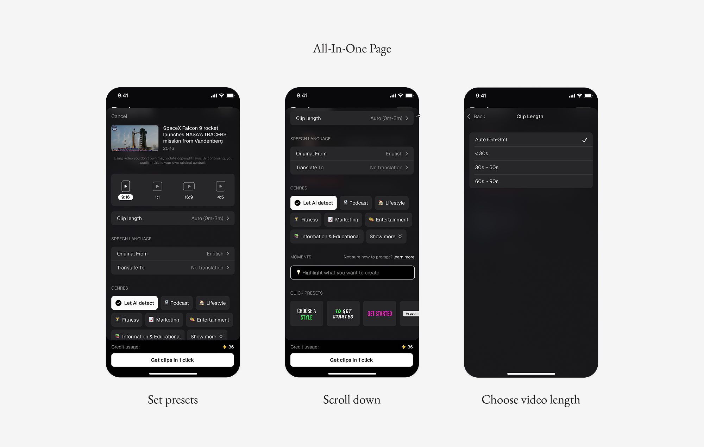
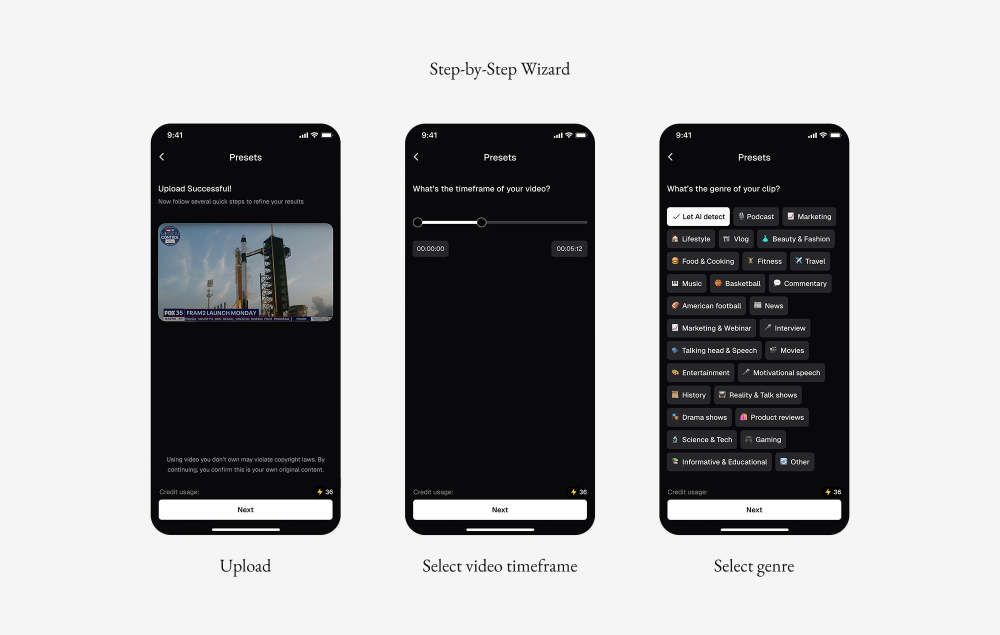
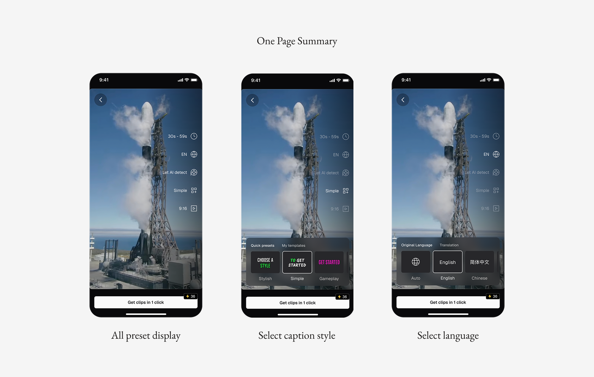
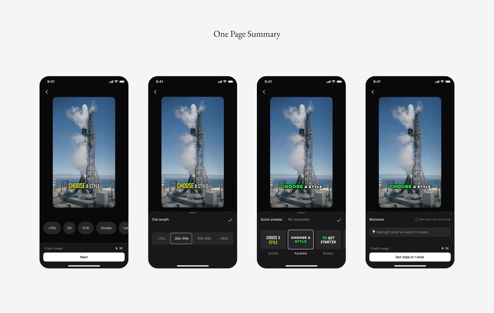
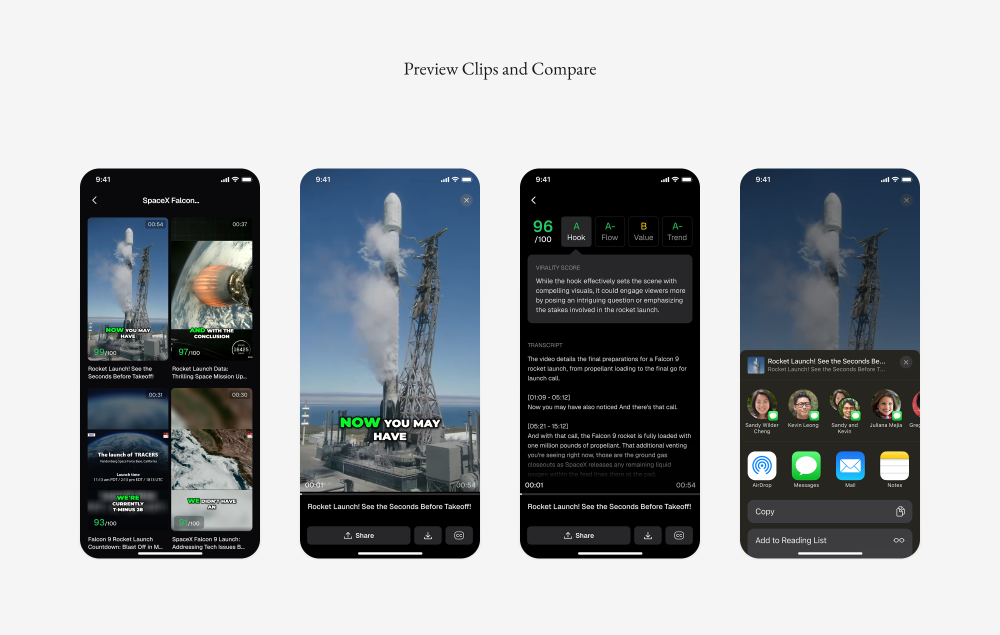
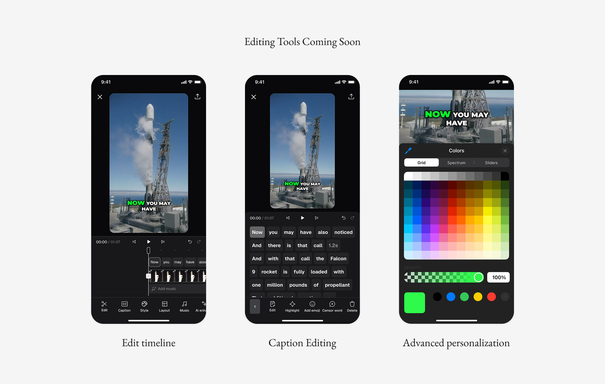

OpusClip AI Video Clipping Mobile MVP
Mobile MVP design for AI-powered video editing — bringing OpusClip's viral clip generation to iOS for the first time.

A mobile MVP for OpusClip, built to expand its reach and meet creators' on-the-go needs.
OpusClip is a fast-growing AI video editing startup. To expand its reach and meet creators' on-the-go needs, we designed a mobile experience that makes clipping and publishing videos accessible without a desktop.
Timeline: Dec 2024 – Mar 2025 · Team: PD, PM, Eng · My role: Product Designer
Visit OpusClip on the App Store ↗Results across retention, adoption, and publish rate.
The mobile MVP moved the needle across the metrics we scoped it for, giving creators a reason to stay in the product and publish more often.
As creators increasingly film, edit, and publish on their phones, OpusClip needed a mobile experience to support their full workflow.
OpusClip's AI clip-generation engine only lived on the web. As more creators started filming and editing entirely from their phones, the product needed a mobile presence to meet them where they already were — without waiting to get back to a desktop.

Business Goal
- Increase retention and expand the user base
- Empower creators with on-the-go tools
- Drive organic growth from the app store
User Needs
- Eliminates the need to transfer mobile-recorded content to a web platform.
- No need to wait and monitor AI progress — preview clips and publish directly on mobile without returning to desktop.
Let's define the scope and create a lean but impactful mobile MVP.
We scoped the mobile experience around the product's core value — transforming long videos into short clips and publishing them across platforms in one click. To deliver on this, we focused on four essential flows: video upload and preset selection, AI-powered clip generation, preview, and sharing, resulting in a lean yet impactful mobile MVP.
On the web, these flows were already well-defined but heavily desktop-oriented. When translating this flow into mobile, two key design challenges emerged.
HMW help mobile users select presets effortlessly?
We explored three directions before landing on the final flow. An all-in-one page gave users full control but caused information overload. A step-by-step wizard reduced cognitive load by presenting one choice at a time, but forced users through every option and made it hard to revisit earlier choices. The final direction — a one-page summary with a single-tap entry point — kept the flow fast and clean while still letting users jump back to any choice.




HMW help mobile users easily preview and compare AI-generated clips?
Our first pass let users click into a clip and scroll through duration, preview, transcript, and scoring rationale — easy to compare, but slow, and switching clips meant going back to the list. We then tried swiping left and right between clips, which sped up switching but conflicted with the system's back gesture. The final design kept the fast switching of swiping while resolving the gesture conflict, so comparing clips finally felt as quick as scrolling a feed.

Bring advanced editing tools to mobile.
The launched version currently focuses on the core flows defined in our mobile MVP. As the next step, we plan to bring advanced video-editing capabilities from the web to mobile — including editing tools, caption customization, and more. This will empower users with greater flexibility and truly enable on-the-go video creation.
